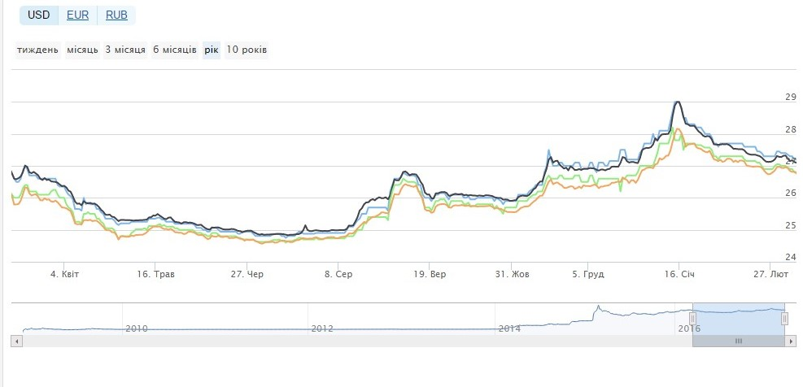

Валютний ризик – небезпека валютних втрат внаслідок зміни курсу іноземної валюти щодо національної при здійсненні кредитних, валютних, зовнішньоторговельних операцій, а також операційна фондових та товарних біржах. Валютний ризик наявний за відкритої валютної позиції. Для імпортерів та експортерів валютний ризик виникає, коли валютою ціни е іноземна валюта імпортер зазнає збитків при підвищенні курсу валюти в період між укладенням контракту і здійсненням платежу по ньому, експортер – при зниженні курсу валюти. В обох випадках отримані кошти в національних валютах менші від тих сум, які експортер і імпортер розраховували отримати в момент підписання контракту. Валютний ризик можливий між кредиторами та боржниками якщо кредит чи позичка виражені в іноземній валюті. Валютний ризик зростає в умовах сучасного режиму «плаваючих» валютних курсів. Він ускладнює міжнародні економічні відносини. Зменшують валютні ризики хеджування, захисне застереження, валютне застереження. Розрізняють три види валютних ризиків операційний, перерахунковий, економічний.
Рис1. Зміна курсу долара за 1 рік
